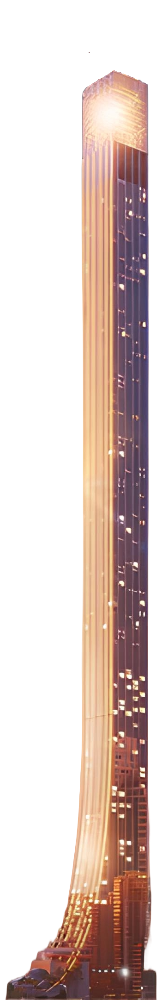
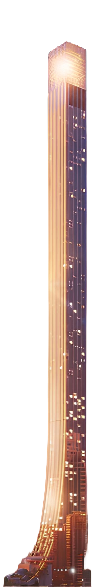

Edifícios Inteligentes
By Variant
Introdução aos Edifícios Inteligentes e Sustentáveis
A urbanização crescente e as mudanças climáticas têm aumentado a demanda por soluções que combinem tecnologia e sustentabilidade para reduzir a pegada ecológica das cidades.
Relevância no contexto atual:
Edifícios inteligentes são essenciais para cidades inteligentes, contribuindo para a sustentabilidade e qualidade de vida urbana. Eles utilizam tecnologia para gerenciar recursos de forma eficiente, reduzindo o consumo de energia e água. Isso melhora o conforto dos habitantes e minimiza o impacto ambiental.

Rosewood Hotel - SP
O Rosewood São Paulo, projetado por Jean Nouvel, é um ícone de luxo sustentável. Com jardins verticais e arquitetura contemporânea, o hotel harmoniza natureza e design moderno. Utilizando materiais locais e práticas ecológicas, oferece uma experiência sofisticada e consciente.


A Tecnologia por Trás dos Edifícios Inteligentes
Sensores são responsáveis por monitorar diversas condições internas e externas, como temperatura, iluminação, qualidade do ar, presença de pessoas e até níveis de umidade.
The Line
Design Inovador e Ecológico
Impacto Ambiental Zero
Tecnologia de Transporte Rápido
Impacto Ambiental: O Poder da Eficiência Energética
Edifícios inteligentes usam automação e sensores para otimizar energia e recursos, ajustando iluminação e climatização de forma eficiente. Com fontes renováveis e gestão sustentável da água, reduzem a pegada de carbono e melhoram o conforto, contribuindo para a preservação ambiental.
 

ASSISTA AO VIDEO
MASS DAMPER
O TMD (Tuned Mass Damper) no Senna Tower é um sistema que atua como contrapeso para reduzir o balanço causado pelo vento, aumentando o conforto dos moradores. O Senna Tower é o primeiro edifício da América Latina a usar essa tecnologia.
LEED PLATINUM
Primeiro supertall residencial do mundo com o nível máximo da principal certificação ambiental mundial.
500+
MetrosO Senna Tower possui mais de 500 metros de altura, o que o torna o maior arranha-céu residencial do mundo. Essa altura impressionante destaca-se no horizonte e redefine os padrões de construção residencial.
"A maior iniciativa de inovação no território nacional."
Parece que você chegou ao fim
Parece que você chegou ao fim